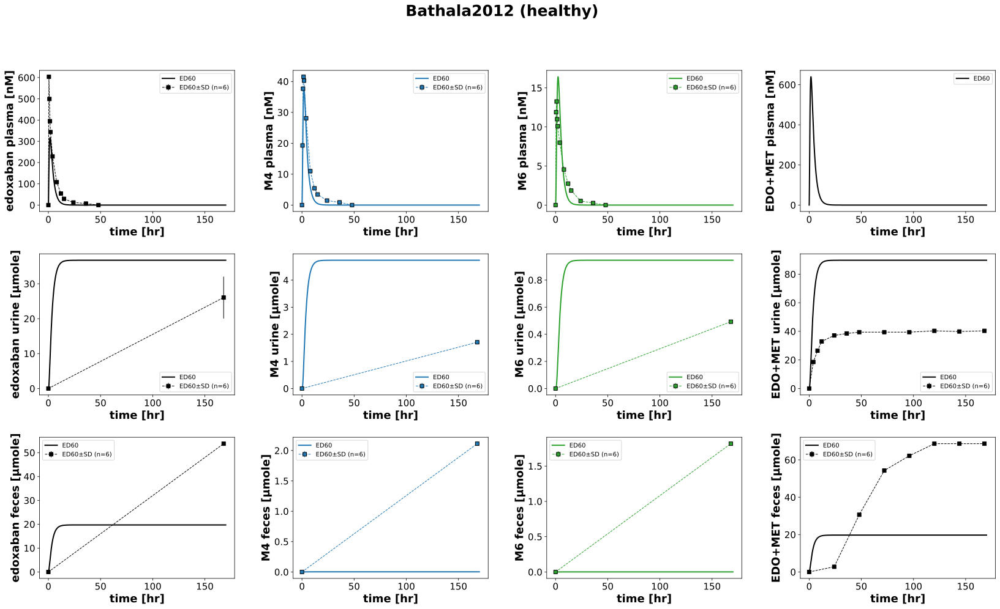

|  |
../../../../src/pkdb_models/models/edoxaban/experiments/studies/bathala2012.py
from typing import Dict
from sbmlsim.data import DataSet, load_pkdb_dataframe
from sbmlsim.fit import FitMapping, FitData
from sbmlutils.console import console
from pkdb_models.models.edoxaban.experiments.base_experiment import (
EdoxabanSimulationExperiment,
)
from pkdb_models.models.edoxaban.experiments.metadata import Tissue, Route, Dosing, ApplicationForm, Health, Health, \
Fasting, EdoxabanMappingMetaData, Coadministration
from sbmlsim.plot import Axis, Figure
from sbmlsim.simulation import Timecourse, TimecourseSim
from pkdb_models.models.edoxaban.helpers import run_experiments
class Bathala2012(EdoxabanSimulationExperiment):
"""Simulation experiment of Bathala2012."""
# colors = {
# "edoxaban": "tab:blue",
# "M4": "tab:green",
# "M6": "tab:red",
# "edoxaban_metabolites_urine": "black",
# "edoxaban_metabolites_feces": "black",
# }
intervention = "ED60"
infos_pk = {
"[Cve_edo]": "edoxaban",
"[Cve_m4]": "M4",
"[Cve_m6]": "M6",
"[Cve_edo_total]": None,
"Aurine_edo": "edoxaban_urine",
"Aurine_m4": "M4_urine",
"Aurine_m6": "M6_urine",
"Aurine_edo_total": "edoxaban_metabolites_urine",
"Afeces_edo": "edoxaban_feces",
"Afeces_m4": "M4_feces",
"Afeces_m6": "M6_feces",
"Afeces_edo_total": "edoxaban_metabolites_feces",
}
def datasets(self) -> Dict[str, DataSet]:
dsets = {}
for fig_id in ["Fig2", "Fig3", "Tab2A"]:
df = load_pkdb_dataframe(f"{self.sid}_{fig_id}", data_path=self.data_path)
for label, df_label in df.groupby("label"):
dset = DataSet.from_df(df_label, self.ureg)
if fig_id == "Fig3":
if label.startswith("edoxaban"):
dset.unit_conversion("mean", 1 / self.Mr.edo)
if label.startswith("M4_"):
dset.unit_conversion("mean", 1 / self.Mr.m4)
if label.startswith("M6_"):
dset.unit_conversion("mean", 1 / self.Mr.m6)
dsets[label] = dset
return dsets
def simulations(self) -> Dict[str, TimecourseSim]:
Q_ = self.Q_
tcsims = {}
tcsims[f"{self.intervention}"] = TimecourseSim([
Timecourse(
start=0,
end=170 * 60,
steps=2000,
changes={
**self.default_changes(),
"BW": Q_(85, "kg"),
"PODOSE_edo": Q_(60, "mg"),
},
)
])
return tcsims
def fit_mappings(self) -> Dict[str, FitMapping]:
mappings = {}
# PK
for k, sid in enumerate(self.infos_pk.keys()):
name = self.infos_pk[sid]
if name is None:
continue
tissue = Tissue.PLASMA
if "urine" in name:
tissue = Tissue.URINE
elif "feces" in name:
tissue = Tissue.FECES
mappings[f"fm_{name}_ED60"] = FitMapping(
self,
reference=FitData(
self,
dataset=f"{name}_ED60",
xid="time",
yid="mean",
yid_sd="mean_sd",
count="count",
),
observable=FitData(
self,
task=f"task_ED60",
xid="time",
yid=sid,
),
metadata=EdoxabanMappingMetaData(
tissue=tissue,
route=Route.PO,
application_form=ApplicationForm.TABLET,
dosing=Dosing.SINGLE,
health=Health.HEALTHY,
fasting=Fasting.FASTED,
),
)
return mappings
def figures(self) -> Dict[str, Figure]:
return {
**self.figure_pk()
}
def figure_pk(self) -> Dict[str, Figure]:
fig = Figure(
experiment=self,
sid="Fig2_3",
num_cols=4,
num_rows=3,
name=f"{self.__class__.__name__} (healthy)",
)
plots = fig.create_plots(
xaxis=Axis(self.label_time, unit=self.unit_time), legend=True
)
plots[0].set_yaxis(self.label_edo_plasma, unit=self.unit_edo)
plots[1].set_yaxis(self.label_m4_plasma, unit=self.unit_m4)
plots[2].set_yaxis(self.label_m6_plasma, unit=self.unit_m6)
plots[3].set_yaxis(self.label_edo_total_plasma, unit=self.unit_edo)
plots[4].set_yaxis(self.label_edo_urine, unit=self.unit_edo_urine)
plots[5].set_yaxis(self.label_m4_urine, unit=self.unit_m4_urine)
plots[6].set_yaxis(self.label_m6_urine, unit=self.unit_m6_urine)
plots[7].set_yaxis(self.label_edo_total_urine, unit=self.unit_edo_urine)
plots[8].set_yaxis(self.label_edo_feces, unit=self.unit_edo_feces)
plots[9].set_yaxis(self.label_m4_feces, unit=self.unit_m4_feces)
plots[10].set_yaxis(self.label_m6_feces, unit=self.unit_m6_feces)
plots[11].set_yaxis(self.label_edo_total_feces, unit=self.unit_edo_feces)
for ks, sid in enumerate(self.infos_pk.keys()):
name = self.infos_pk[sid]
color = "black"
if name:
if "M4" in name:
color = "tab:blue"
elif "M6" in name:
color = "tab:green"
# simulation
plots[ks].add_data(
task=f"task_{self.intervention}",
xid="time",
yid=sid,
label=self.intervention,
color=color,
)
# data
if name is None:
continue
plots[ks].add_data(
dataset=f"{name}_{self.intervention}",
xid="time",
yid="mean",
yid_sd="mean_sd",
count="count",
label=self.intervention,
color=color,
)
return {
fig.sid: fig,
}
if __name__ == "__main__":
run_experiments(Bathala2012, output_dir=Bathala2012.__name__)
{kind=link}